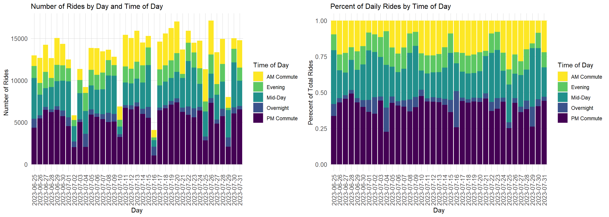
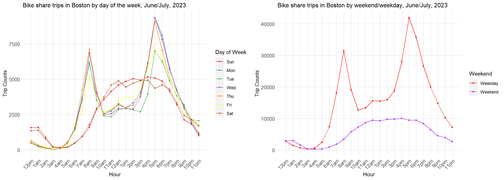
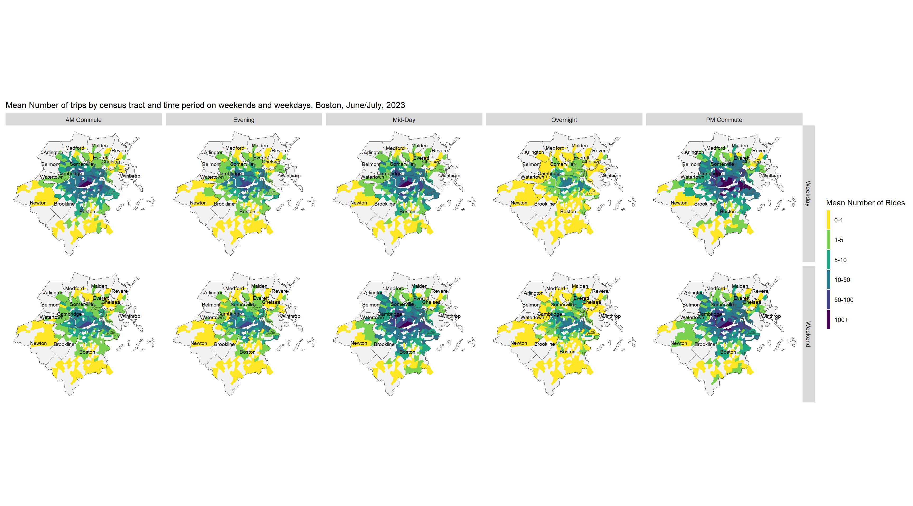
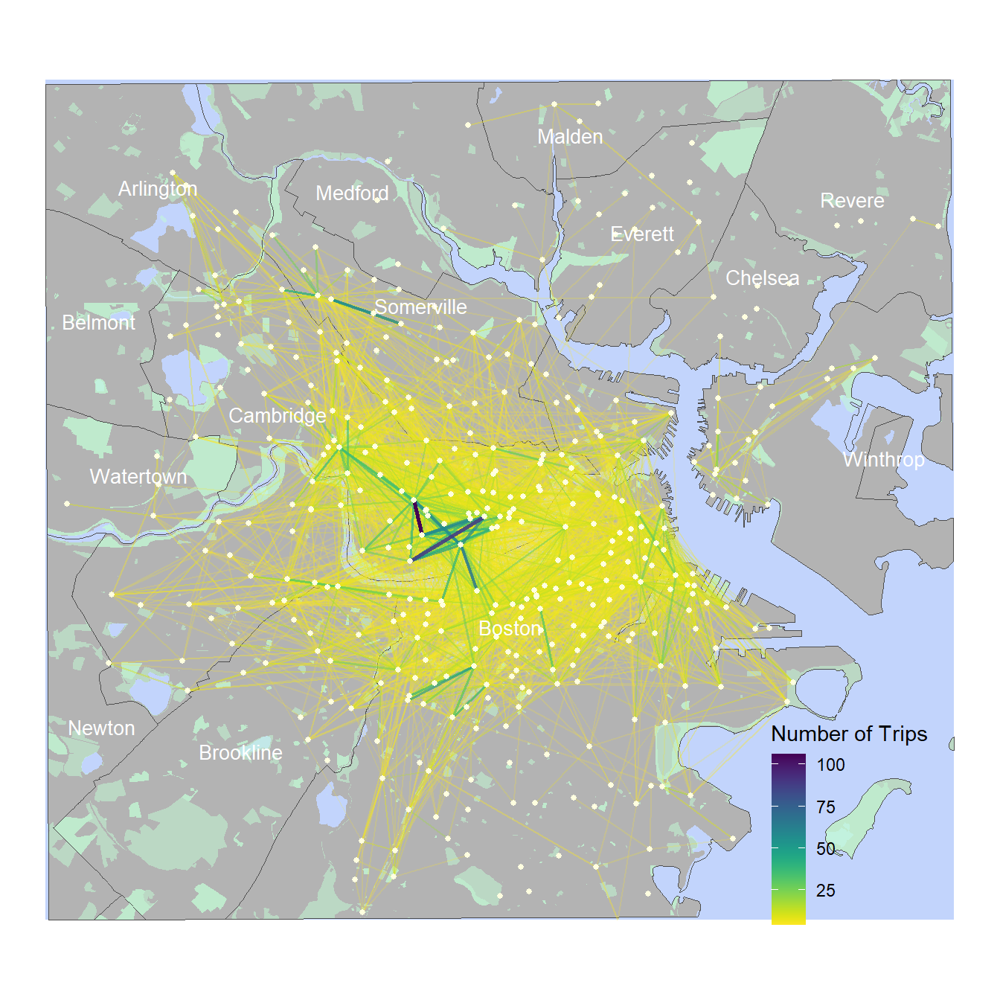
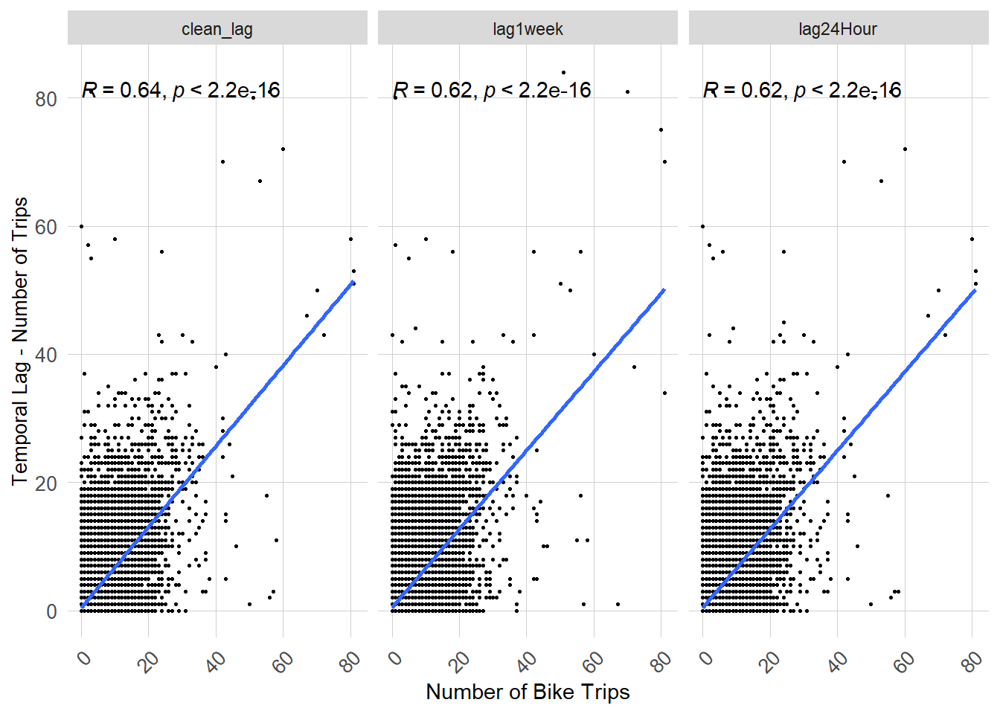
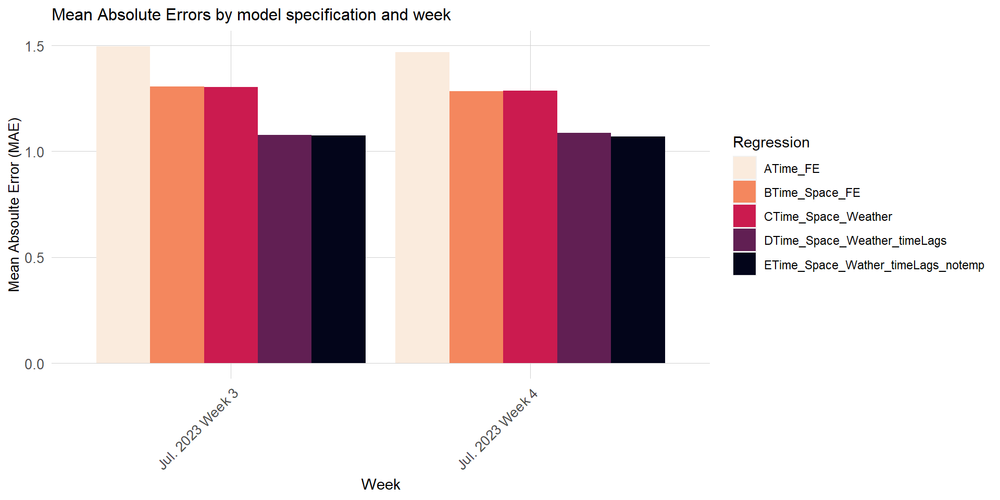
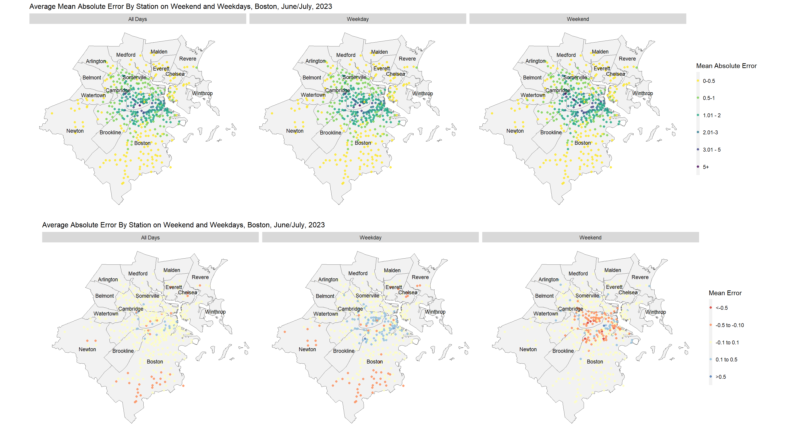
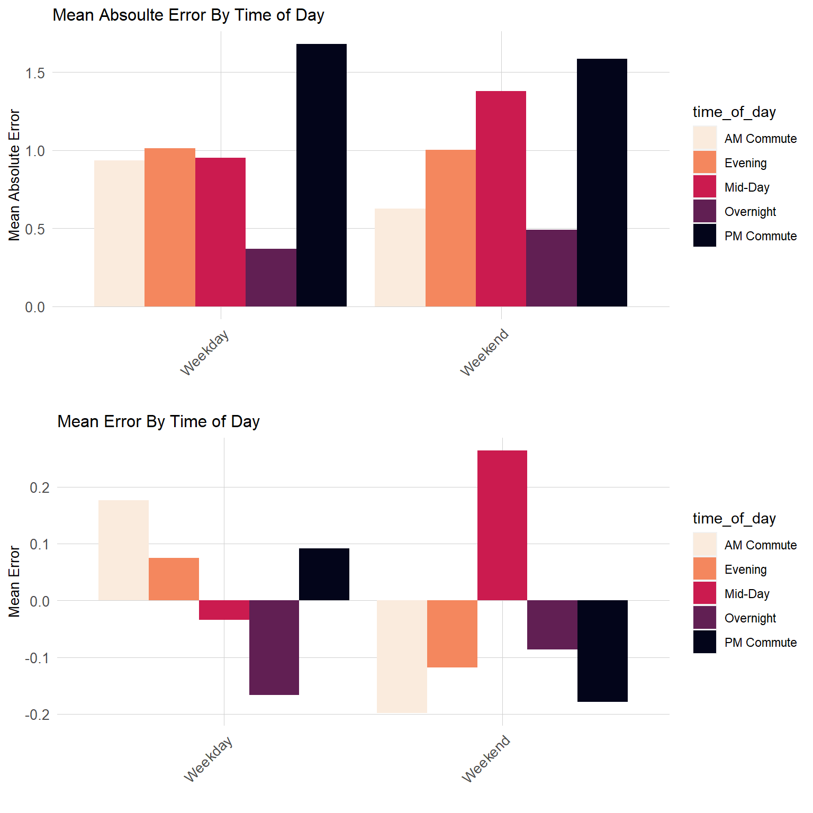

Many cities across the United States have started using docked bike share systems. Docked bike shares are often funded using a mix of public and private funding and are present in approximately 50 different US cities. Docked bike systems provide an additional method of commuting for workers who do not own their own bike and also provide residents with access to bikes for recreational purposes. Additionally, bikes are a clean, environmentally mode of transportation.
One challenge with docked bike share systems is that demand for bikes at a given location is not static over time. Demand for bikes at a given location will depend on many factors including the day of the week, time of day, the weather, and your location in the city. For example, demand for bikes at docking stations near downtown areas or universities is likely going to peak during the afternoon rush hour between the hours of approximately four to seven PM. This analysis uses Machine Learning techniques to predict demand for bikes at existing bike stations in the Boston metro area. The model predicts the number of bike trips at a given station within a one hour period.
The results of the model can be used by the Boston blue bikes network to help with re-balancing and redistribution of bikes to areas where there will likely be an increase in demand. The model is designed to predict demand up to 24 hours from the current time. The Boston blue bikes team can use this model to forecast demand during peak periods and then send out mini-vans to relocate bikes to areas where there is predicted increase in demand.
This analysis includes all stations in the Boston Bluebikes network except for bike stations located in Salem and the bike station located at the Blue Cross Blue shield office in Hingham. These stations are excluded because they are located very far away from the other stations in Bluebikes network.
The model presented here is designed to predict demand over summer months, and was trained on bike trip data covering a five week period from June 25th 2023 to July 31st 2023. It is important to note that this model should only be used to predict demand in the summer months due to the training data used. The model is not generalizable to the winter months when bike share demand is likely lower due to the cold weather.
Data Wrangling
In this section I compile, transform, and merge together all the datasets used in this analysis. The datasets used include the bikeshare data, census data, and weather data.
Bike Data
The first step in the analysis is to import the bike share data from BlueBikes. I import data covering June and July of 2023.
Code
B_Jun2023 <-read.csv('C:/Users/richa/GitHub/musa_5080_HW/HW6_Bike_predictions/Data/202306-bluebikes-tripdata.csv')B_Jul2023 <-read.csv('C:/Users/richa/GitHub/musa_5080_HW/HW6_Bike_predictions/Data/202307-bluebikes-tripdata.csv')Data <-rbind(B_Jun2023,B_Jul2023) %>%mutate(start_station_name =ifelse(start_station_name =='Graham and Parks School – Linnaean St at Walker St','Graham and Parks School',start_station_name))bike_data <-read.csv('C:/Users/richa/GitHub/musa_5080_HW/HW6_Bike_predictions/Data/current_bluebikes_stations.csv') %>%filter(District !='Salem'& Name !='BCBS Hingham') %>%st_as_sf(coords =c("Longitude", "Latitude"), crs='EPSG:4326') %>%st_transform(2249)rm(B_Jun2023)rm(B_Jul2023)
I count the number of bike share rides occurring per hour by station.
Code
Data2 <- Data %>%mutate(interval60 =floor_date(ymd_hms(started_at), unit ="60 mins")) %>%group_by(start_station_name,interval60) %>%tally()
Next, I build a ride panel. I also set the number of trips to zero for stations which did not have any trips occurring at a given time / date.
The trip data is split into a training and testing data. The training dataset includes all trips from June 25th 2023 to July 15th 2023 and the testing datsaet includes all trips July 15th 2023 to July 31st 2023.
In this section we present the results of some exploratory analysis which show the temporal, weather, and spatial patterns which impact bike share demand in the Boston metro area. Exploratory analysis is an import step in the model development process as this step can help us understand the spatial and temporal patterns which drive bike share demand in the Boston metro area.
Weather Patterns
Weather patterns can be a major driver of bike demand. Bike riders may be less likely to want to use a bike when it is raining or snowing. Our analysis uses weather data from Boston Logan airport to determine weather patterns in Boston. The weather station data was downloaded using the riem package, which provides access to weather station data for airports across the country. The weather station database is maintained by Iowa State University.
Note that this study uses weather data for Boston Logan airport for all stations in the Boston metro area. This is a limitation of the model, as weather patterns are likely to vary in different parts of the city. However, using weather data for the same location helps keep the model simple and will improve its utility for making predictions once it is operationalized. When making predictions for bike share demand, officials will only need to provide the model with a rough rainfall forecast for the entire city. This can be easily obtained from weather reports. It would not be practical for BlueBikes to obtain separate forecasts for each bike station in the Boston metro area.
The graph below shows the Precipitation and Temperature patterns over the time period which is used for training the model. We note multiple days with large amount of rains including June 27th, June 28th, July 2nd, July 10th, July 16th, July 21st, July 25th, and July 29th. The temperature ranges between 60 and 90 degrees Fahrenheit and the average temperature is around 75 to 80 degrees. The temperature range during the months of June and July in Boston is ideal to for biking so temperature will likely not have a major impact on bike share demand during the period used for training the model.
The chart below shows the total number of bike share trips happening per hour across the Bluebikes network. The chart includes all trips taking place between June 25th and July 31st. The background color indicates the type of day. Weekdays have a grey background, while weekends have a yellow background. The 4th of July holiday has a red background, while days when it rained have a blue background.
This chart shows some key temporal trends. On weekdays, there are almost allways two clear peaks in bike share demand, one in the morning during the am rush hour period and one in the evening during the PM rush hour period. The PM rush hour peak is always higher than the PM rush hour peak. On weekends there is only one peak period. On days when it rains there is a decline in demand - this decline in demand is present both on the weekend and on weekdays. On 4th of July there is a unique trend and two peaks are present, but the final peak takes place latter in the evening than usual. One hypothesis is that the second peak may be occurring after 4th of July fireworks have finished.
The first chart below shows below the number of rides taking place per day across the BlueBike network broken down by time of day. The number of rides which occur per day is generally around 12,500 to 15,000 rides. Notably, the total number of rides declines sharply on days when heavy rain storms occurred. Examples of this include July 2nd, July 10th, July 16th, and July 29th. The total number of rides occurring on weekend days is similar to the total number of rides occurring on weekdays.
The second chart shows the percentage of rides taking place during different times of day. Generally, the largest percentage of rides take place during the PM commute which takes place between 3 and 7pm. The smallest percentage of rides take place overnight - the overnight period includes rides occurring between 11pm and 5am. Notably, the percentage of rides which occur during the overnight period increases on Friday and Saturday nights as residents return home after going to restaurants and bars. I hope they are not biking drunk!
Code
grid.arrange(ncol=2,all_data %>%group_by(day,time_of_day) %>%summarise(sum_count =sum(sum_rides)) %>%st_drop_geometry() %>%ggplot(aes(x=as.character(day),y=sum_count,fill=time_of_day))+geom_bar(stat='identity')+scale_fill_viridis_d(direction=-1, name='Time of Day')+labs(y='Number of Rides',x='Day')+ggtitle("Number of Rides by Day and Time of Day")+ plotTheme+theme(axis.text.x =element_text(angle =90,vjust=0.5)),all_data %>%group_by(day,time_of_day) %>%summarise(sum_count =sum(sum_rides)) %>%st_drop_geometry() %>%ggplot(aes(x=as.character(day),y=sum_count,fill=time_of_day))+geom_col(position='fill',stat='identity')+scale_fill_viridis_d(direction=-1,name='Time of Day')+labs(y='Perecent of Total Rides',x='Day')+ggtitle("Percent of Daily Rides by Time of Day")+ plotTheme+theme(axis.text.x =element_text(angle =90,vjust=0.5)))

The chart below shows the total number of bike share trips occurring in Boston per hour by day of the week and by weekend/weekday. On weekdays, we can clearly see the two peaks during the PM and AM commute periods. The peak is higher during the PM commute period. On weekends, the majority of trips occur between the hours of 11am and 7pm. The number of trips tends to be lower on Friday and Tuesdays relative to other days. The lower number of trips on Friday can likely be attributed to fewer commuters going to the office to work in person on Fridays. The lower number of trips on Tuesday may be a results of 4th of July and the rain event on Tuesday July 25th deflating the total number of trips on Tuesdays.
Code
palette <-c('#e41a1c','#377eb8','#4daf4a','#984ea3','#ff7f00','#ffff33','#a65628')grid.arrange(ncol=2,all_data %>%st_drop_geometry() %>%mutate(hour =hour(interval60)) %>%group_by(hour,dotw) %>%summarise(sum_count =sum(sum_rides)) %>%ggplot()+geom_line(aes(x=hour, y=sum_count,color = dotw), binwidth =1)+geom_point(aes(x=hour, y=sum_count,color = dotw),size=1)+scale_color_manual(values = palette, name='Day of Week')+scale_x_continuous(breaks =seq(0,23,1),labels=c('12pm','1am','2am','3am','4am','5am','6am','7am','8am','9am','10am','11am','12am','1pm','2pm','3pm','4pm','5pm','6pm','7pm','8pm','9pm','10pm','11pm'))+labs(title="Bike share trips in Boston by day of the week, June/July, 2023",x="Hour", y="Trip Counts")+ plotTheme,all_data %>%st_drop_geometry() %>%mutate(hour =hour(interval60)) %>%group_by(hour,is_weekend) %>%summarise(sum_count =sum(sum_rides)) %>%ggplot()+geom_line(aes(x=hour, y=sum_count,color =as.character(is_weekend)), binwidth =1)+geom_point(aes(x=hour, y=sum_count,color =as.character(is_weekend)),size=1)+scale_color_manual(values=c('red','purple'),name='Weekend',labels =c('Weekday','Weekend'))+scale_x_continuous(breaks =seq(0,23,1),labels=c('12pm','1am','2am','3am','4am','5am','6am','7am','8am','9am','10am','11am','12am','1pm','2pm','3pm','4pm','5pm','6pm','7pm','8pm','9pm','10pm','11pm'))+labs(title="Bike share trips in Boston by weekend/weekday, June/July, 2023",x="Hour", y="Trip Counts")+ plotTheme)

Spatial/Temporal Trends in Bikeshare demand
The maps below shows the mean number of trips originating in each census by time of day on weekends and weekdays. The maps show a strong spatial clustering pattern to where trips originate. The areas where the largest number of bike trips start are located in Cambridge and downtown Boston. There are very large number of trips originating in census tracts around MIT and Harvard. Notably, the time of day does not appear to have a major impact on where trips originate from. The hotspots for trip origins appear to remain relatively constant across the different times of day. The origin hotspots are also similar on weekdays and weekends. We can again observe that the number of trips is highest on weekdays during the PM commute period when residents are returning home from work. The increase during the PM commute period is most notable in downtown Cambridge and downtown neighborhoods of Boston.
data_by_day <- all_data %>%mutate(weekend =ifelse(is_weekend ==1, "Weekend","Weekday")) %>%st_drop_geometry() %>%group_by(day, time_of_day, GEOID, weekend) %>%summarize(sum_rides =sum(sum_rides))%>%group_by(time_of_day, GEOID, weekend) %>%summarize(mean_rides =mean(sum_rides))%>%inner_join(census_filt %>%select(GEOID,geometry),.,by='GEOID') ggplot()+geom_sf(data = towns_filt,fill='grey95')+geom_sf(data = data_by_day,aes(fill =cut(mean_rides, breaks =c(-1,1,5,10,50,100,1000))),color='transparent')+scale_fill_viridis_d(direction =-1,name='Mean Number of Rides', labels =c('0-1','1-5','5-10','10-50','50-100','100+'))+geom_sf(data = towns_filt,color='grey30',fill='transparent')+geom_sf_text(data = towns_filt,aes(label=town),size=2.5,position='jitter') +facet_grid(weekend ~ time_of_day)+labs(title="Mean Number of trips by census tract and time period on weekends and weekdays. Boston, June/July, 2023")+ mapTheme

Spatial Patterns in Trip Routes
The map below looks at the most common bike trip routes. The data shown is for the week of July 11th 2023 to July 15th, all routes with more than three trips are included. The thickness and color of the line indicates the number of trips along a given route. Routes with many frequent daily trips includes rides from South Boston to Downtown and rides within Cambridge. We can also observe that with few exceptions the typical trip length with a BlueBike is not long in distance. This map, along with the previous map also reveal that there are many bike stations where usage is very low.
Code
towns_filt2 <- towns_filt %>%st_transform('EPSG:4326') %>%st_crop(xmin=-70.99, xmax=-71.18, ymin=42.43,ymax=42.3) %>%st_transform('EPSG:2249') parks <- parks %>%st_transform('EPSG:2249') %>%st_intersection(.,towns_filt2)bikes_filt2 <- bike_data[st_intersects(bike_data,towns_filt2) %>% lengths >0,] bbox =st_bbox(towns_filt2)towns_no_water <- towns_filt2 %>%erase_water()play <- Data %>%mutate(day =as.character(floor_date(ymd_hms(started_at), unit ="day"))) %>%filter(day =='2023-07-10'| day =='2023-07-11'| day =='2023-07-12'| day =='2023-07-13'| day =='2023-07-14'| day =='2023-07-15') %>%group_by(start_station_name, end_station_name) %>%tally() %>%ungroup() %>%filter(n >3) %>%filter(start_station_name != end_station_name) %>%left_join(bike_data %>% dplyr::select(Name, geometry), by =c("start_station_name"="Name")) %>%st_as_sf() %>%mutate(start_lat =st_coordinates(geometry)[,2],start_long =st_coordinates(geometry)[,1]) %>%st_drop_geometry() %>%left_join(bike_data %>% dplyr::select(Name, geometry), by =c("end_station_name"="Name")) %>%st_as_sf() %>%mutate(end_lat =st_coordinates(geometry)[,2],end_long =st_coordinates(geometry)[,1]) %>%st_drop_geometry() %>%arrange(n)ggplot()+geom_rect(aes(xmin= bbox$xmin, xmax= bbox$xmax, ymin= bbox$ymin, ymax = bbox$ymax),fill='#c2d4fc')+geom_sf(data=towns_no_water,color="transparent",fill='grey70')+geom_sf(data=parks,fill='#c2fcd5',color='transparent',alpha=0.5)+geom_sf(data=towns_filt2,fill="transparent",color='grey30')+geom_segment(data=play,aes(x=start_long,y=start_lat,xend=end_long,yend=end_lat,alpha=n,color=n,linewidth=n))+scale_color_viridis(direction=-1)+labs(color='Number of Trips',fill='')+geom_sf(data=bikes_filt2,size=1,color='lightyellow')+geom_sf_text(data = towns_filt2,aes(label=town),size=3.5,position='jitter',color='white')+scale_alpha(range =c(0.2,1),guide ="none")+scale_linewidth(range =c(0.4,1),guide ="none")+scale_x_continuous(limits =c(bbox$xmin, bbox$xmax)) +scale_y_continuous(limits =c(bbox$ymin, bbox$ymax))+theme_void()+theme(legend.position =c(0.85, 0.15), legend.background =element_rect(fill="transparent", colour ="transparent"))

Temporal Lags
On method of improving the model is to use temporal lags. Temporal lags are based on the concept that what happened in the recent past is likely to happen again in the future. Bike share patterns are likely to cluster in time, and we can take advantage of this pattern to build a more predictive model. Because our goal is to build a model which can be used with a 24 hour leeway, we can only use spatial lags which are more than or equal to 24 hours. As seen by previous exploratory analysis, the number of bike trips occurring at a given hour are likely to be similar to the number of trips which occurred at the same hour on the previous day, and at the same hour and day on the previous week. For this reason, we decide to develop a 24 hour temporal lag which represents the number of bike trips at a station at the same time on the previous day, and a 1 week lag which represents the number of bike trips which occurred at the same hour one week ago.
One limitation with using the 24 hour lag is that bike trends on Monday and Saturday are not likely to be similar to the trends which occurred on the previous day. For this reason, we develop a third lag called the “clean-lag”. The clean lag uses the 24 hour temporal lag on all days except for on Mondays and Saturdays when the 7 day lag is used.
The charts below show the correlation between the 24 hour lag, the 1 week lag, and the clean lag and the number of bike trips at a given hour. As shown, there is generally a positive correlation between the number number of bike trips occuring at a station at a given hour and the temporal lag. The charts are also show the Pearson correlation value (i.e: R) which measures the strength of linear relationship between two variables. As shown, the clean lag has the highest correlation value, followed by the 1 week temporal lag.
Code
training %>% dplyr::select(lag24Hour, lag1week, clean_lag, sum_rides) %>%st_drop_geometry() %>%gather(Variable, Value, -sum_rides) %>%ggplot(aes(x=sum_rides, y=Value))+geom_point(size=0.5)+geom_smooth(method="lm", se=FALSE, fullrange=FALSE)+stat_cor(method="pearson")+facet_wrap(~Variable)+labs(x="Number of Bike Trips",y="Temporal Lag - Number of Trips")+ plotTheme

Modelling
Now that we have explored our data and understood some of the key spatial and temporal patterns the next step is to develop a predictive model. The dependent variable we are trying to predict is the number of rides per hour. We have divided our five week sample into a training and test dataset, the training datasaet covers the period from June 25th 2023 to July 15th 2023. The test dataset covers the last two weeks of July (i.e: July 16th 2023 to July 31st 2023).
Our model is developed based on the training dataset, and we will use OLS linear regression methods, to train the model. We try multiple different models with varying predictors to see which predictors gives us the highest accuracy. The list below includes the predictors included in each of the five model. The 1st model on only considers temporal variables, the 2nd model considers temporal and spatial variables, the 3rd model considers temporal, spatial, and weather variables. The 4th model considers temporal, spatial, weather, and temporal lag variables. The 5th model is identical to the 4th but does not include temperature information.
Model A: Time Model:
Hour of day,
Day of Week,
time_of_day (i.e: PM Commute, AM Commute, Overnight, Mid-Day, Overnight)
Model B: Time/Space Model:
Hour of day,
Day of Week,
time_of_day (i.e: PM Commute, AM Commute, Overnight, Mid-Day, Overnight)
Station Location
Town Station is Located in
Model C: Time/Space/Weather Model:
Hour of day,
Day of Week,
time_of_day (i.e: PM Commute, AM Commute, Overnight, Mid-Day, Overnight)
Station Location
Town Station is Located in
Temperature
Precipitation
Model D: Time/Space/Weather/Spatial Lag Model:
Hour of day,
Day of Week,
time_of_day (i.e: PM Commute, AM Commute, Overnight, Mid-Day, Overnight)
Station Location
Town Station is Located in
Temperature
Precipitation
clean temporal lag
1 week temporal lag
Model E: Time/Space/Weather/Spatial Lag Model:
Hour of day,
Day of Week,
time_of_day (i.e: PM Commute, AM Commute, Overnight, Mid-Day, Overnight)
Station Location
Town Station is Located in
Precipitation
clean temporal lag
1 week temporal lag
Code
reg1 <-lm(sum_rides ~hour(interval60) + dotw + time_of_day, data=training)reg2 <-lm(sum_rides ~hour(interval60) + dotw + time_of_day + Name + District, data=training)reg3 <-lm(sum_rides ~hour(interval60) + dotw + time_of_day + Name + District + Temperature + Precip, data=training)reg4 <-lm(sum_rides ~hour(interval60) + dotw + time_of_day + Name + District + Temperature + Precip + clean_lag + lag1week, data=training)reg5 <-lm(sum_rides ~hour(interval60) + dotw + time_of_day + Name + District + Precip + clean_lag + lag1week, data=training)
Assessing Model Errors
Having trained each of the modelling, we can now move on to testing our model against unseen data. The models were trained on data covering June 25th 2023 to July 15th 2023 and tested on data covering July 15th 2023 to July 31st 2023.
Code
ride.Test.weekNest <- test %>%nest(-week)
Code
model_pred <-function(dat, fit){ pred <-predict(fit, newdata = dat)}
The next step is to assess the performance of our model. I use the five models to predict what ride share demand will be for the data points in our testing dataset. The testing dataset covers the last two weeks of July, and each model is used to predict the number of trips per hour at all stations within the study. The graph below shows the Mean absolute error by week for the five models. As shown below, model E has the lowest error in both week 3 and week 4 and appears to have the highest accuracy of the five models.
Code
week_predictions %>% dplyr::select(week, Regression, MAE) %>%gather(Variable, MAE, -Regression, -week) %>%ggplot(aes(as.character(week), MAE)) +geom_bar(aes(fill = Regression), position ="dodge", stat="identity") +scale_fill_viridis_d(option='rocket',direction=-1) +scale_x_discrete(labels=c("Jul. 2023 Week 3","Jul. 2023 Week 4"))+labs(title ="Mean Absolute Errors by model specification and week",x='Week',y='Mean Absoulte Error (MAE)') + plotTheme

The charts below show the total number of bike trips per hour predicted by our five models and compares the prediction to actual observations. The predictions are shown by the blue line while the observed line represents actual data. The model in which the prediction line most closely follows the observed line is model E, reinforcing the conclusion that model E has the best performance. Generally speaking, the prediction line for model E closely follows the observed line. Exceptions are present on July 16th, July 17th, and July 25th. Looking back at our exploratory analysis, can revel some clues as to why the model performs poorly on these dates.
July 16th was a very rainy day, the rainfall charts shows that the duration of the rainfall was very high but the intensity was low. The current model is based only on rainfall intensity and not duration. The model may be improved by adding a variable for rainfall duration.
July 17th occurred one week after July 10th and July 10th was a very rainy day. As a result, the number of trips indicated by the 1 week temporal lag is likely not an accurate representation of bike share demand on July 27th.
On July 25th a rainfall event occurred during the commute period. Despite include rainfall as a predictor, the predictions produced by the model are not adequately accounting for rainfall.
While model E does have limitations, it does appear to produce close to accurate predictions on most days and the average error is around one bike trip. This indicates the model accuracy is high, despite having some challenges with effectively capturing the impacts of weather anomalies.
Code
week_predictions %>%mutate(interval60 =map(data, pull, interval60),Name =map(data, pull, Name)) %>% dplyr::select(interval60, Name, Observed, Prediction, Regression) %>%unnest() %>%gather(Variable, Value, -Regression, -interval60, -Name) %>%group_by(Regression, Variable, interval60) %>%summarize(Value =sum(Value)) %>%ggplot(aes(interval60, Value, colour=Variable)) +geom_line(size =1.1) +facet_wrap(~Regression, ncol=1) +labs(title ="Predicted/Observed bike share time series", subtitle ="Boston; A test set of 2 weeks", x ="Hour", y="Station Trips") + plotTheme+scale_x_datetime(breaks =seq(as.POSIXct("2023-07-16"), as.POSIXct("2023-07-31"), by="1 day"),date_labels ="%b %d")
Model Generalizability
The maps below show the mean absolute error and the mean error by station. Both statistics are useful to look at because the mean absolute error provides information on the magnitude of our errors regardless of if the model is over or under predicting. The mean error is useful because it can provide information on if the model tends to under predict or over predict the actual result. A negative value indicates that the model tends to over predict for a given location while a positive value indicates that the model tends to under predict. Maps are provided for both error metrics for the full five week period, for just days on the weekend, and for just days during the week.
We can observe that our errors tend to be larger at stations where the demand for bike share is higher. However, this finding is expected as it is easier for the model to predict demand at a station where the number of rides is consistently very low.
One finding, which users of the model will need to keep in mind is that the model tends to on average under predict demand on weekdays at busy stations and over predict demand on weekends at busy stations.
Code
all_data$prediction =predict(reg5,all_data)all_data$prediction =round((ifelse(all_data$prediction <0,0,all_data$prediction)),0)all_data$error = all_data$sum_rides - all_data$predictionall_data$abs_error =abs(all_data$error)all_data_error_weekend <- all_data %>%group_by(Name,geometry,is_weekend) %>%summarize(mean_abs_error =mean(abs_error), mean_error =mean(error)) %>%mutate(time =ifelse(is_weekend ==1, "Weekend","Weekday")) %>%select(-is_weekend)all_data_error <- all_data %>%group_by(Name,geometry) %>%summarize(mean_abs_error =mean(abs_error), mean_error =mean(error)) %>%mutate(time ='All Days')all_data_error <-rbind(all_data_error,all_data_error_weekend) %>%mutate(cut1 =cut(mean_abs_error, breaks =c(0,0.5,1,2,3,5,20)),cut2 =cut(mean_error, breaks =c(-2,-0.5,-0.1,0.1,0.5,2)))palette =c('#d73027','#fc8d59','#ffffbf','#91bfdb','#4575b4')grid.arrange(ncol=1,ggplot()+geom_sf(data = towns_filt,fill='grey95')+geom_sf(data = all_data_error,aes(color = cut1), fill ="transparent", size =1.5,alpha =0.8)+scale_color_viridis_d(direction =-1,name='Mean Absolute Error', labels =c('0-0.5','0.5-1','1.01 - 2','2.01-3','3.01 - 5','5+'))+facet_grid(~time)+geom_sf_text(data = towns_filt,aes(label=town),size=3,position='jitter')+labs(title="Average Mean Absolute Error By Station on Weekend and Weekdays, Boston, June/July, 2023")+ mapTheme,ggplot()+geom_sf(data = towns_filt,fill='grey95')+geom_sf(data = all_data_error,aes(color = cut2), fill ="transparent", size =1.5,alpha =0.8)+scale_color_manual(values = palette,name='Mean Error',labels =c('<-0.5','-0.5 to -0.10','-0.1 to 0.1','0.1 to 0.5','>0.5'))+facet_grid(~time)+geom_sf_text(data = towns_filt,aes(label=town),size=3,position='jitter')+labs(title="Average Absolute Error By Station on Weekend and Weekdays, Boston, June/July, 2023")+ mapTheme)

The charts below present the mean absolute error and the mean error by time of day. Separate charts are again presented for the weekend and weekdays. We can observe that the model has the highest error during the PM commute period. This is again expected, as periods when demand is higher are also likely to have larger errors. Errors are lowest during the overnight periods when demand is generally very low.
On weekdays, the model tends to slightly under predict demand during the PM and AM period and tends to over predict demand during the overnight period. On weekends, the model tends to under predict around mid-day, which is the weekend period when demand is generally highest.
Code
grid.arrange(ncol=1,all_data %>%group_by(time_of_day, is_weekend) %>%summarize(mean_abs_error =mean(abs_error), mean_error =mean(error)) %>%mutate(weekend =ifelse(is_weekend ==1, "Weekend","Weekday")) %>%ggplot(aes(x=weekend,y=mean_abs_error))+geom_bar(aes(fill=time_of_day),position ="dodge", stat="identity")+scale_fill_viridis_d(option='rocket',direction=-1)+labs(x='',y='Mean Absolute Error')+ggtitle('Mean Absoulte Error By Time of Day')+ plotTheme,all_data %>%group_by(time_of_day, is_weekend) %>%summarize(mean_abs_error =mean(abs_error), mean_error =mean(error)) %>%mutate(weekend =ifelse(is_weekend ==1, "Weekend","Weekday")) %>%ggplot(aes(x=weekend,y=mean_error))+geom_bar(aes(fill=time_of_day),position ="dodge", stat="identity")+scale_fill_viridis_d(option='rocket',direction=-1)+labs(x='',y='Mean Error')+ggtitle('Mean Error By Time of Day')+ plotTheme)

Conclusions
The model is useful tool for Bluebikes to use when making decisions about re balancing and redistribution of bikes. As mentioned, the model is intended to be run with up 24 hours of leeway. It is recommended that the model be run five hours prior to the peak PM and AM commute periods. On weekends, the model can be run in the early morning to forecast demand during the peak usage period which takes place during the middle of the day. In order to run the model, information on rainfall forecasts will need to be available.
The model will provide a forecast for the number of trips which are expected to originate at a given station during the upcoming peak usage period - this number can then be compared to the number of bikes currently at each station to determine which stations currently have too many bikes and which do not have enough. Then city can then send out mini-vans to relocate bikes from stations where there are too many bikes.
Given the models tenancy to slightly under estimate bike trips, it is appropriate to assume that there may be one to two trips more at a station compared to what the model forecasts. Using a slightly higher estimate will help ensure that there are sufficient bikes available for users.